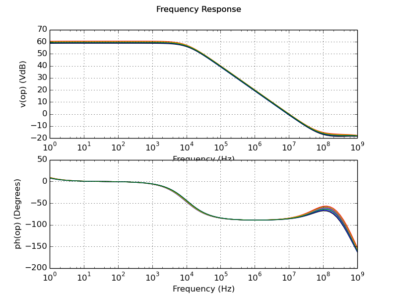

Testbench Results for
cmos_fig24p2
Measurements
Measurement
Min.
Avg.
Max.
Unit
3dB Gain Frequency
9.5e+03
1.02e+04
1.08e+04
Hz
Unity Gain Frequency
9.25e+06
9.79e+06
1.04e+07
Hz
DC Gain
58.7
59.6
60.5
dBV
Phase Margin
93.6
94.7
95.9
deg
Plots
Frequency Response

Distributions